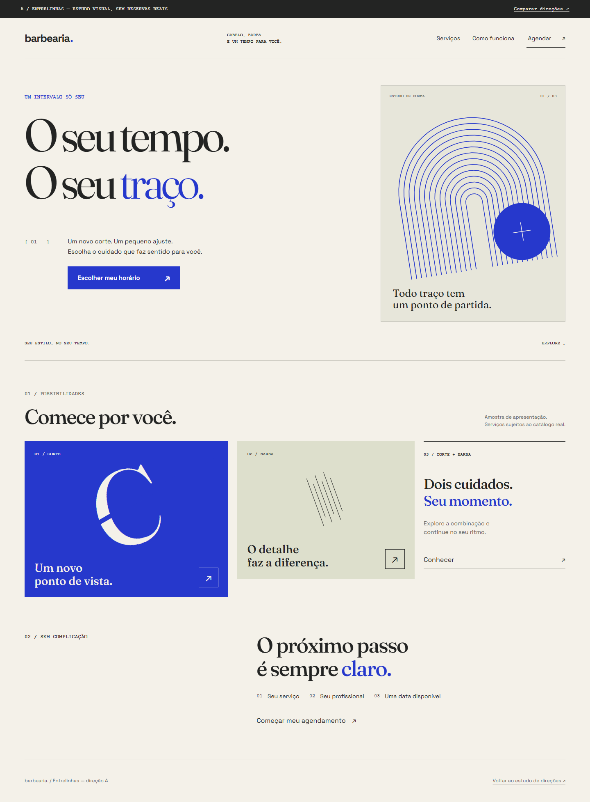
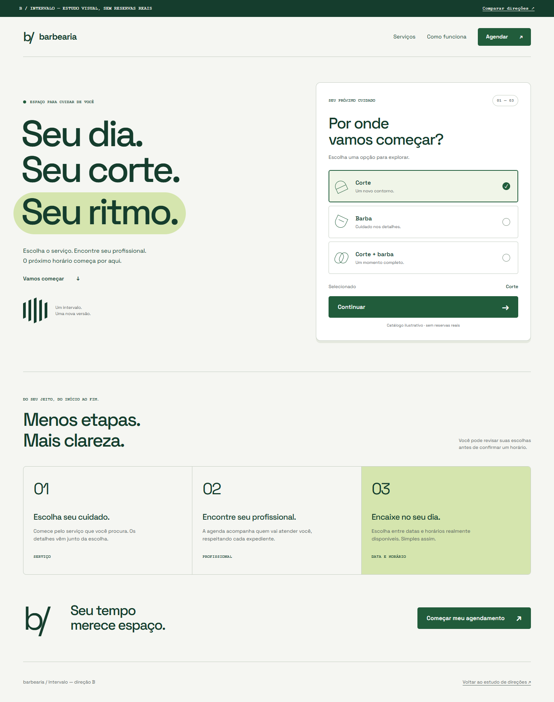
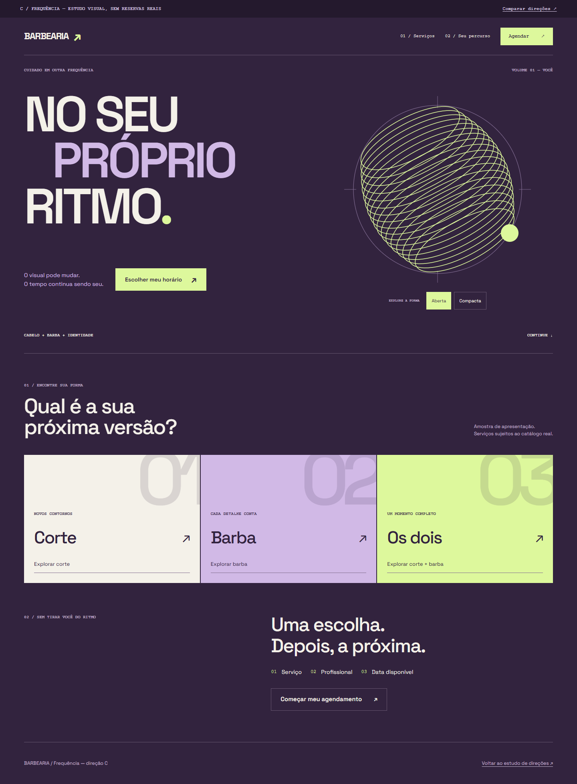

ARecomendada
Editorial contemporâneo
Entrelinhas

Uma presença editorial com um agendamento direto. Tipografia expressiva, hierarquia assimétrica e detalhes precisos.
Explorar EntrelinhasDireção de arte + experiência digital
Três maneiras de dar identidade ao mesmo produto.
Explore as páginas, experimente as interações e compare no celular.
Editorial contemporâneo

Uma presença editorial com um agendamento direto. Tipografia expressiva, hierarquia assimétrica e detalhes precisos.
Explorar EntrelinhasMinimalismo expressivo

O produto vem primeiro. Escolha visível, controles claros e uma assinatura gráfica compacta, feita de intervalos.
Explorar IntervaloDigital experimental

Uma identidade que responde ao toque. Cartaz tipográfico e escultura abstrata controlável, sem movimento automático.
Explorar FrequênciaO que avaliar
01 / PresençaQual direção representa melhor a personalidade que você quer para a barbearia?
02 / UsoO próximo passo é óbvio? Teste o CTA, os serviços e o menu em uma tela pequena.
03 / ContinuidadeA direção escolhida deve funcionar também no calendário, nos formulários e nos estados de erro.
Minha recomendação: A — Entrelinhas. Tem o melhor equilíbrio entre presença autoral e leitura tranquila. B é a opção mais objetiva; C oferece a identidade mais experimental. A escolha permanece sua.